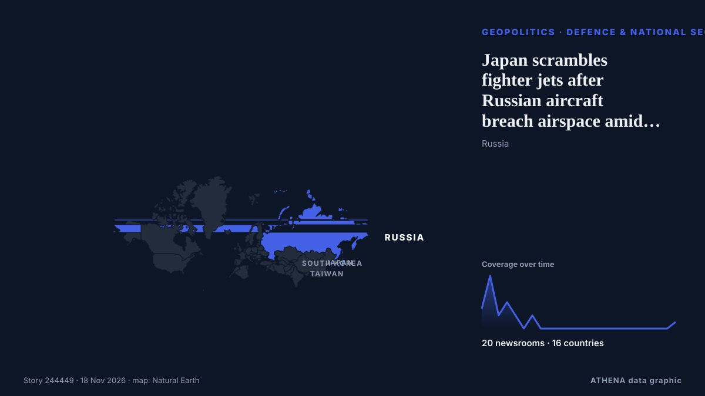

ATHENA Glaux Intelligence — Παγκόσμια ειδησεογραφική ανάλυση — κάθε αριθμός εξηγημένος
Κάθε είδηση, ελεγμένη σε πολλές χώρες.
Το ATHENA Glaux παρακολουθεί 634 ειδησεογραφικά μέσα σε όλο τον κόσμο. Μια είδηση γίνεται επαληθευμένο γεγονός μόνο όταν την αναφέρουν ανεξάρτητα μέσα. Κάθε γεγονός δείχνει ποιος το ανέφερε πρώτος και έναν βαθμό κινδύνου με τους λόγους του.
Αναφορές έρχονται από ανεξάρτητα μέσα — όταν δύο συναντηθούν στην ίδια ιστορία, γίνεται επιβεβαιωμένο γεγονός.
Πώς ελέγχει το ATHENA μια είδηση
- ΣυλλογήΟι αναφορές φτάνουν από ανεξάρτητα μέσα σε πολλές χώρες.
- ΑντιστοίχισηΌταν δύο μέσα συναντιούνται στην ίδια είδηση, γίνεται επαληθευμένο γεγονός.
- ΕξήγησηΚάθε γεγονός δείχνει ποιος ήταν πρώτος, πόσο εξαπλώθηκε και γιατί ο κίνδυνος είναι αυτός.

ΓεωπολιτικήJapan scrambles fighter jets after Russian aircraft breach airspace amid rising Pacific tensions
Suspected Russian aircraft entered Japanese airspace near Okinoshima, and Prime Minister Sanae Takaichi warned of instability at the Quad Leaders Summit. από Fox News (World)
Οι τίτλοι των ειδήσεων παρουσιάζονται στα αγγλικά, όπως δημοσιεύτηκαν.
Opening ceremony of APEC CEO Summit 2026 held in Shenzhen
The Asia-Pacific Economic Cooperation (APEC) CEO Summit 2026 opened Tuesday in Shenzhen, south China's Guangdong Province, bringing together business and political leaders from across the… από CGTN (China)
Gulf Nations On High Alert After US Strikes Iran’s Qeshm Island
Kuwait reported drone threats and Bahrain intercepted Iranian attacks, hours after US jets reportedly struck an IRGC missile site on Qeshm Island. από News of Bahrain

Πλοία στα θαλάσσια περάσματα τώρα
Ζωντανές μετρήσεις AIS. Πατήστε ή περάστε πάνω από μια μπάρα για λεπτομέρειες.
Pound Sterling Price News and Forecast: GBP/USD hits five-week low as UK CPI miss meets Fed hike expectations
UK inflation came in a tenth under forecast on Wednesday, and Federal Reserve (Fed) Governor Christopher Waller called for a half-point hike, so expected rates have moved against the Pound from both… από FXStreet
‘Human’ is Cambridge Dictionary’s word of the year
Other new words added to the dictionary in 2026 included “aura farming” and “looksmaxing”. από The Straits Times
Russian Military Plane Crashes in Siberia, Killing 19
A Russian military transport aircraft crashed in Siberia, killing all 19 people on board, after a suspected technical failure, the Defence Ministry said. από Khaama Press
Γεωπολιτική, Πολιτική & Ασφάλεια
Περισσότερα ›Highly classified NSA communications network goes down
A highly classified communications network used by the US National Security Agency (NSA) has gone down, CNN reported Tuesday, citing six people familiar with the matter. από Israel Hayom (English)
- Πόλεμοι & συγκρούσεις
Iran Drone Attack Targets US Military Base in Kuwait
- Πόλεμοι & συγκρούσεις
Israel kills three Palestinians, including a child, in attacks across Gaza
- Διπλωματία & σύνοδοι
Pakistani Man Sentenced to 27 Years in US Prison over Iran-Backed Plot to Kill Trump
- Άμυνα & εθνική ασφάλεια
Germany, UK push back after US criticizes Ukraine's deep strikes into Russia
Οικονομία, Χρηματοοικονομικά & Αγορές
Περισσότερα ›Police in Bangladesh clash with garment workers demanding higher minimum wages
Police in Bangladesh have clashed with garment workers demanding higher wages. από ABC News (International)
- Μετοχές, ομόλογα & αγορές
Anthropic IPO draws strong demand as AI company prepares for $64bn share sale
- Απασχόληση & μισθοί
I gave evidence to Alan Milburn’s NEETs review – we all owe it to our young people to act
- Κρυπτονομίσματα & ψηφιακά στοιχεία
After $6.3 billion crypto heist, Binance plans Asia expansion
- Τράπεζες & πίστη
Bombay High Court quashes ICICI Bank’s nod to prosecute ex-CEO Chanda Kochhar in ‘loan fraud’ case
Εμπόριο, Βιομηχανία & Υποδομές
Περισσότερα ›CMA CGM triples profit as Q3 freight rates and cargo volumes rise
Shipping drives earnings growth, while logistics margins weaken despite higher revenue. από FreightWaves
- Κατασκευές & υποδομές
Dutch arms manufacturer says Ukraine used its missiles to attack Crimean Bridge
- Κατασκευές & υποδομές
Waymo pulls driverless taxis from freeways after California ban
- Εμπόριο & εμπορικές συμφωνίες
Carney says Canada’s growing trade ties with China are not a top concern for Trump
- Δασμοί & έλεγχοι εξαγωγών
Thailand to seek US tariff cut after reaching key terms of trade deal, says minister
Ενέργεια, Πόροι & Περιβάλλον
Περισσότερα ›Iraq Refers Jurf al-Sakhar Oil Pipeline Violations to Judiciary
On Wednesday, al-Aboudi confirmed that the Energy Police would assume responsibility for protecting the oil pipeline, in accordance with an order issued by the Commander-in-Chief of the Armed Forces. από Kurdistan24 (English)
- Πετρέλαιο & φυσικό αέριο
US Tightens Iran Blockade with Curbs on Oil Transfers at Sea, Advisory Shows
- Πετρέλαιο & φυσικό αέριο
Woodside seals LNG supply deal with Trafigura
- Πετρέλαιο & φυσικό αέριο
EnQuest Sells NEO NEXT+ in UK North Sea Retreat
- Κλίμα & κλιματική πολιτική
Liberia Calls for Stronger Climate Support in Meeting with UN Secretary-General at COP31
Τεχνολογία, ΤΝ & Κυβερνοασφάλεια
Περισσότερα ›Governments warn Java flaw leaves computer systems open to hackers
Governments around the world sounded the alarm on Wednesday over a critical flaw in the popular programming language Java that could allow hackers to access computer systems, the latest high-profile… από Insurance Journal
- Διάστημα & δορυφόροι
After 49 years in space, Nasa’s Voyager 1 probe one light-day away from Earth
- Τεχνητή νοημοσύνη
OpenAI gives NATO access to most advanced cybersecurity AI
- Επεξεργαστές & υπολογιστική
The enraging hypocrisy at the heart of the Nvidia scandal
- Διάστημα & δορυφόροι
Voyager 1 spacecraft reaches one light-day milestone
Επιχειρήσεις, Εταιρείες & Επενδύσεις
Περισσότερα ›ZIM Q3 Profit Surges to $830M as Freight Rates Rise 55%
Israeli containership operator ZIM Integrated Shipping Services reported a sharp increase in third-quarter 2026 earnings, driven by stronger freight rates, higher… από Maritime Professional
- Ανταγωνισμός
Sony defeats £2 billion UK claim over PlayStation Store pricing
- Εταιρική στρατηγική
After 13-year wait, ‘Grand Theft Auto 6’ to arrive with enormous hype and expectations
- Συγχωνεύσεις & εξαγορές
Ghana's new Shs250bn presidential jet sparks public outrage
- Εταιρική στρατηγική
David Beckham Sues for $41 Million After His Fragrance Is Sold in Gas Stations and Discount Stores
Δυστυχήματα & έκτακτες ανάγκες
Περισσότερα ›As Merger Reports Emerge, Cahill Loses Digital Infrastructure Finance Head to Latham
The trio of laterals arrives at Latham as Cahill becomes the latest firm to enter the merger market, according to a source familiar with the situation. από Law.com
- Δυστυχήματα & έκτακτες ανάγκες
Iranian Regime Never Tires of Spreading Lies – This Time, It Was About US Military Injuries
- Δυστυχήματα & έκτακτες ανάγκες
Risk of nuclear accident in Ukraine increasing this winter, atomic safety regulators say
- Δυστυχήματα & έκτακτες ανάγκες
Petrol bomb kills activist in Bangladesh ex-PM Hasina’s hometown
- Δυστυχήματα & έκτακτες ανάγκες
Five injured in Jordanian Black Hawk helicopter crash during training exercise
Τρεις τρόποι να διαβάσετε σήμερα
Ξεκινήστε από αυτόν που ταιριάζει στον χρόνο σαςΕπαληθευμένα γεγονότα
Κατά σειρά έκτασης της κάλυψης
- With new speaker, Israel parliament moves to unravel Netanyahu legacy159 μέσα · 56 χώρεςΚίνδυνος 5.0
- ‘It’s not up to me’: What Satya Nadella said about Jensen Huang’s Nvidia comeback141 μέσα · 46 χώρεςΚίνδυνος 4.5
- One missing, 11 injured in attack on ADNOC tanker in Hormuz98 μέσα · 39 χώρεςΚίνδυνος 4.2
- Trump arrives in China ahead of trilateral summit with Xi, Putin57 μέσα · 37 χώρεςΚίνδυνος 5.4
- Lee, Putin seek room for cooperation in first meeting despite strains72 μέσα · 33 χώρεςΚίνδυνος 3.5
Γραφείο Ανάλυσης
Κάντε μια ερώτηση και διαβάστε τεκμηριωμένη αξιολόγηση μιας βασικής είδησης, μαζί με το τι θα την διέψευδε.
Ανοίξτε το Γραφείο Ανάλυσης ›Η σημερινή εικόνα
| 23:00 | 582 |
|---|---|
| 00:00 | 350 |
| 01:00 | 377 |
| 02:00 | 325 |
| 03:00 | 398 |
| 04:00 | 379 |
| 05:00 | 404 |
| 06:00 | 503 |
| 07:00 | 663 |
| 08:00 | 548 |
| 09:00 | 590 |
| 10:00 | 574 |
| 11:00 | 744 |
| 12:00 | 366 |
| 13:00 | 589 |
| 14:00 | 725 |
| 15:00 | 788 |
| 16:00 | 515 |
| 17:00 | 639 |
| 18:00 | 896 |
| 19:00 | 707 |
| 20:00 | 442 |
| 21:00 | 485 |
| 22:00 | 480 |
Κίνδυνος των σημερινών γεγονότων
Αναδυόμενα σήματα
- Απότομη αύξηση · Ενεργό τώραJeff Bezos
- Απότομη αύξηση · Ενεργό τώραTrump and Putin
- Απότομη αύξηση · Ενεργό τώραJava
- Απότομη αύξηση · Ενεργό τώραLateef Bhat
- Απότομη αύξηση · Ενεργό τώραTrump and Xi
Μείνετε ενημερωμένοι
ATHENA Weekly Risk Picture
Οι μεγαλύτεροι γεωπολιτικοί, οικονομικοί και ναυτιλιακοί κίνδυνοι της εβδομάδας, διασταυρωμένοι και βαθμολογημένοι.
Κάθε Παρασκευή στις 08:00 ώρα Ελλάδας · δωρεάν · στα αγγλικά
Δωρεάν εγγραφήΤο ATHENA στο Telegram
Οι ειδήσεις τη στιγμή που δημοσιεύονται: έκτακτα γεγονότα με κίνδυνο 6 ή περισσότερο, ωριαία σύνοψη, ενημερώσεις κινδύνου και η ημερήσια ενημέρωση στις 10:00.
Δωρεάν · αναρτήσεις στα αγγλικά · αποχωρείτε όποτε θέλετε
Είσοδος στο κανάλιΤην εγγραφή τη διαχειρίζεται η beehiiv με διπλή επιβεβαίωση: τίποτα από όσα πληκτρολογείτε δεν αποστέλλεται στο ATHENA, και κάθε τεύχος έχει σύνδεσμο διαγραφής.
Παρακολούθηση κινδύνων
Περισσότερα ›Παγκόσμιοι κίνδυνοι — εβδομάδα 47, 2026 (16–22 Νοε) ›